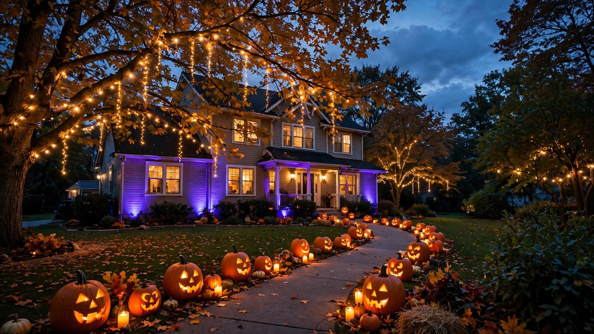

Halloween Outdoor Lighting Ideas 2026: Yard Glow-Ups
Published October 17, 2026 · Updated October 17, 2026 · By EventBuzz Team · 4 min read

Halloween after dark belongs to lighting. The right outdoor lighting turns an ordinary yard into a haunted landscape — and it is the single most impactful decoration you can add.
These Halloween outdoor lighting ideas for 2026 cover every technique: washes, spots, pathways, and projections.
Colour Washing
Wash your house facade in colour with outdoor spotlights:
- Orange: warm, classic, welcoming.
- Purple: spooky and dramatic.
- Green: eerie, witchy, perfect for haunted houses.
- Red: intense — use sparingly for vampire vibes.
- Alternating: orange one side, purple the other. Dynamic and fun.
Two to four spotlights cover most houses. Solar options exist, but plug-in is brighter and more reliable.
Pathway & Accent Lighting
- Stake lights: line walkways with pumpkin, ghost, or bat-shaped stakes.
- Luminaries: paper bags with LED candles — magical and cheap.
- String lights: orange or purple strands along fences, porches, and trees.
- Net lights: drape over bushes for instant coverage.
- Jack-o’-lanterns: the original outdoor lighting — cluster for maximum glow.
Projectors & Effects
- Halloween projectors: cast moving ghosts, bats, or flames onto the house. Huge wow, tiny effort.
- Strobes: use sparingly and never where they could affect passersby with photosensitivity.
- Fog + light: a fog machine with coloured uplighting is the haunted-house combo. See our fog machine guide.
- Window silhouettes: backlight black-paper shapes in windows — visible from the street.
Practical Setup Tips
- Weatherproofing: use outdoor-rated lights and connections; keep plugs off the ground and covered.
- Timers: put everything on timers — on at dusk, off at bedtime. Saves energy and effort.
- Safety: secure all cables (tape down trip hazards), keep lights away from dry leaves, and don’t overload circuits.
- Neighbours: keep strobes and loud effects reasonable — spooky shouldn’t mean sleepless.
Frequently Asked Questions
What is the best colour for Halloween outdoor lighting?
Orange for classic warmth, purple for spooky drama, green for eerie haunted-house vibes. Most houses look best with one dominant colour plus warm white accents.
Are Halloween light projectors worth it?
Yes — they deliver the biggest visual impact per dollar and per minute of setup. Position carefully to avoid shining into neighbours’ windows.
How do I light my yard safely for trick-or-treaters?
Bright pathway lighting is essential: stake lights or luminaries along the walk, a well-lit porch, and clear, trip-free paths.
Can I use indoor lights outside for Halloween?
No — only outdoor-rated lights and extension cords outside. Indoor electrics plus weather is a genuine hazard.
Conclusion
When the sun goes down, lighting IS the decoration. Wash, path, project — and enjoy the best-looking house on the street.
More after-dark magic in our fog-machine and yard decor guides.
Share this guide with friends and family — and have a fantastic Halloween 2026.
Outdoor Lighting Picks
Spotlights, stakes and projectors for the yard.


Links take you to Temu, where shipping and delivery details are shown. Prices can change.